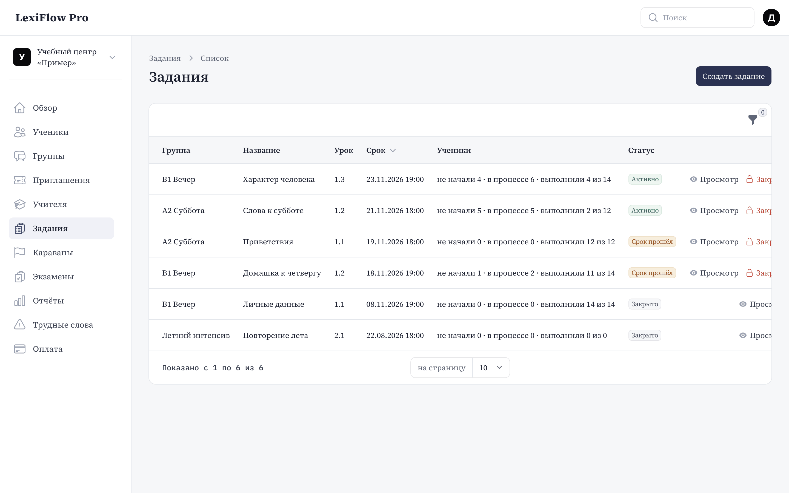
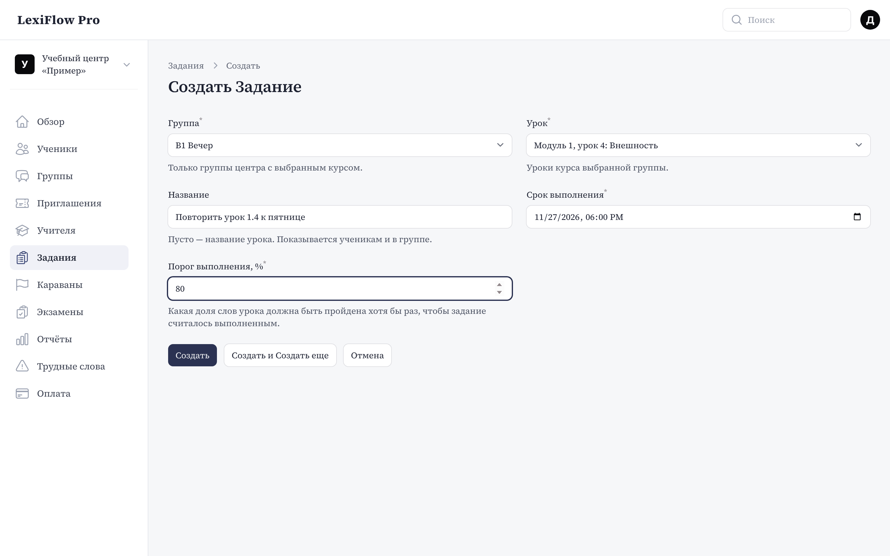
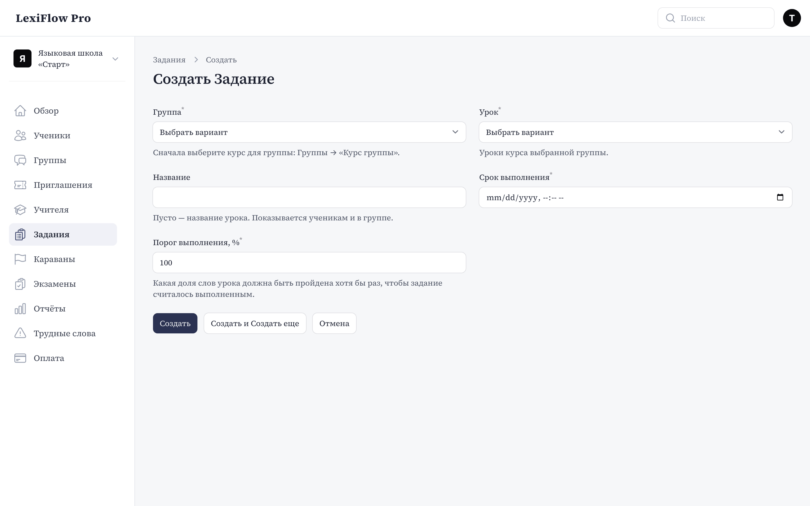
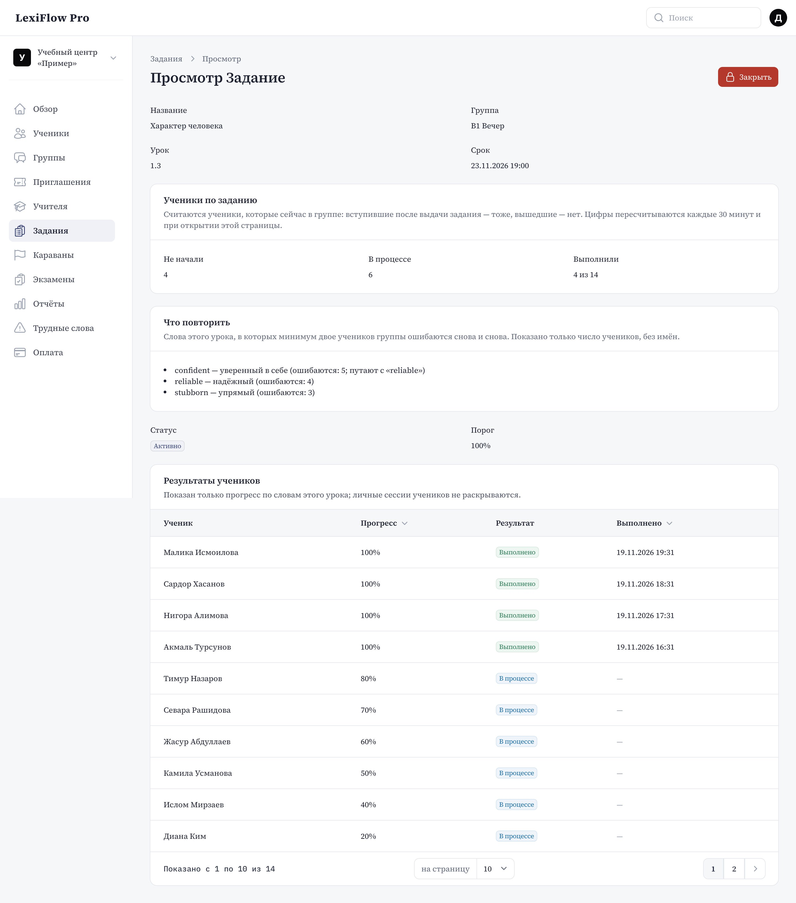
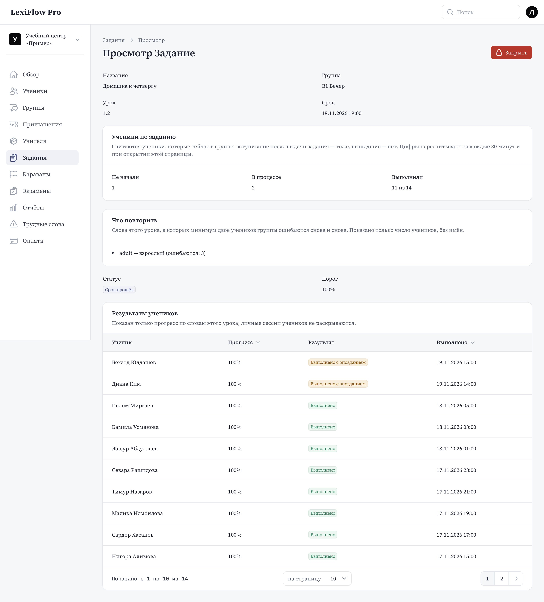
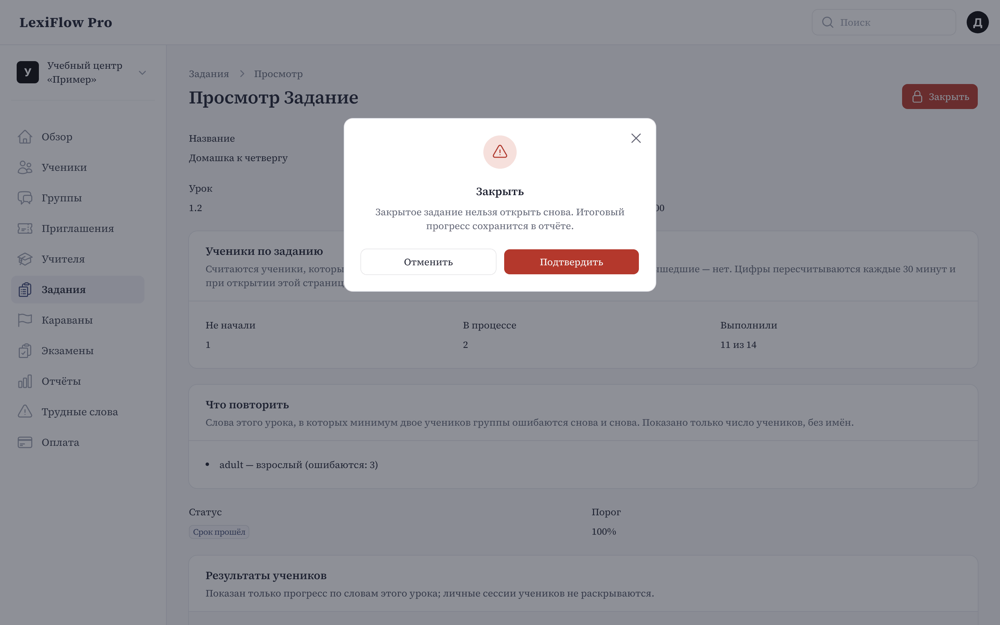
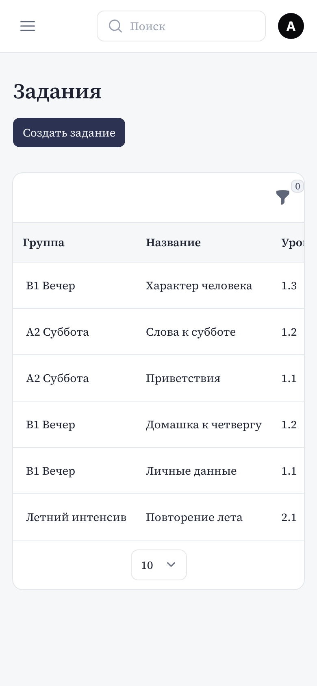
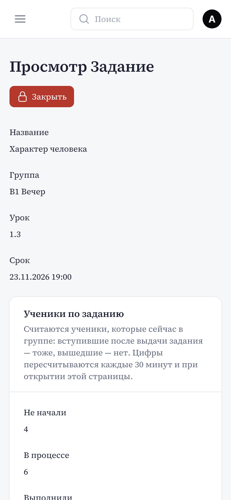
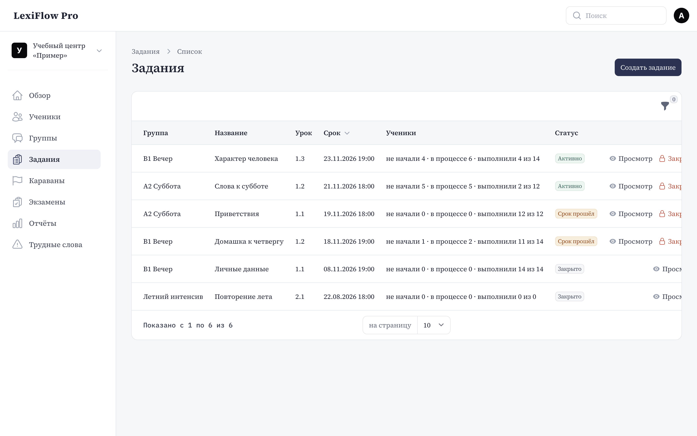

Задание — это один урок курса группы со сроком выполнения. Вы выдаёте урок группе, бот сообщает о нём в чат, ученики проходят слова урока в мини-приложении, а кабинет показывает, кто не начал, кто в процессе и кто выполнил.
Кто имеет доступ: владелец — задания всех групп центра; учитель — только своих групп. Создавать и закрывать задания могут обе роли в группах, которые им видны.

Перед этим у группы должен быть выбран курс (глава «Группы»). Если таких групп нет, под полем «Группа» будет подсказка «Сначала выберите курс для группы».

| Поле | Обязательно | Что задаёт |
|---|---|---|
| Группа | да | только группы центра с выбранным курсом (учителю — только его группы) |
| Урок | да | урок курса выбранной группы |
| Название | нет | пусто — название урока. Видно ученикам и в группе |
| Срок выполнения | да | дата и время в будущем |
| Порог выполнения, % | да | от 1 до 100, по умолчанию 100: какая доля слов урока должна быть пройдена хотя бы раз, чтобы задание считалось выполненным |

Если задание создать нельзя, кабинет скажет почему: «Группа неактивна — бот удалён из чата», «Курс этого урока не опубликован», «Срок должен быть в будущем», «Центр приостановлен — задания не создаются».
Нажмите «Просмотр» в строке задания. Страница пересчитывает цифры при открытии (и сама раз в 30 минут).

| Блок | Как читать |
|---|---|
| Ученики по заданию | «Не начали» — напомнить; «В процессе» — помочь; «Выполнили N из M». M — ученики, которые сейчас в группе: вступившие после выдачи задания тоже считаются, вышедшие — нет |
| Что повторить | до трёх слов этого урока, в которых минимум двое учеников группы ошибаются снова и снова (каждый — не меньше четырёх раз; ошибки считаются за всё время). Рядом — сколько учеников ошибаются и с каким словом его путают. Имён нет. Если таких слов нет, блока нет |
| Результаты учеников | прогресс каждого ученика (доля слов урока, на которые он хотя бы раз ответил верно) и итог: «Выполнено», «Выполнено с опозданием», «В процессе», «Не начато»; дата выполнения |
Личные занятия и ответы ученика кабинет не показывает — только прогресс по словам урока.

После срока задание не закрывается: статус «Срок прошёл», поздние выполнения засчитываются. Задание, просроченное на 14 дней, закрывается само. Закрыть раньше — кнопка «Закрыть» в строке или на странице задания.

Значок воронки: «Статус» (активно, закрыто) и «Группа». Сортировка по сроку — по заголовку «Срок».


